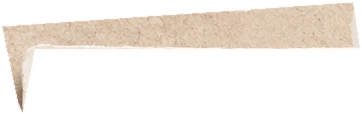
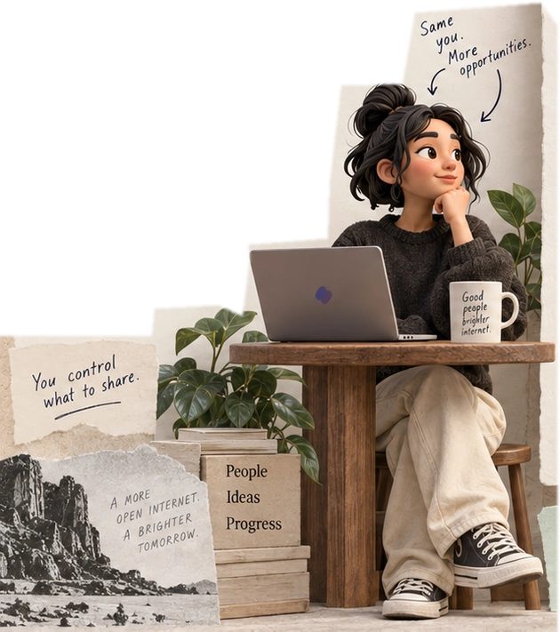
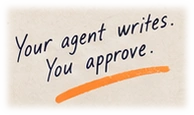
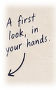
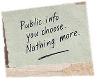
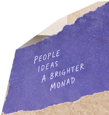

Build your
profile
Your agent writes. You approve.
- 1Sign in
- 2Add sources
- 3Review
Add sources
Draft your profile from public information you choose to share. You’ll approve every detail before saving.
Public sources are not verified. Review and approve your draft before anything is saved.
Profile draft
User-provided · not verifiedAlex Chen
Builds products at the intersection of people, internet, and creative tech.
Current interests
Onchain social, creator tools, open source, and human–AI collaboration.
Can offer
Product design, frontend development, community building, and feedback on early ideas.
Wants to meet
Founders, designers, and curious people exploring social, identity, and the future of the internet.
Sources (user-provided · not verified)
GitHubXalexchen.devImported via Agent